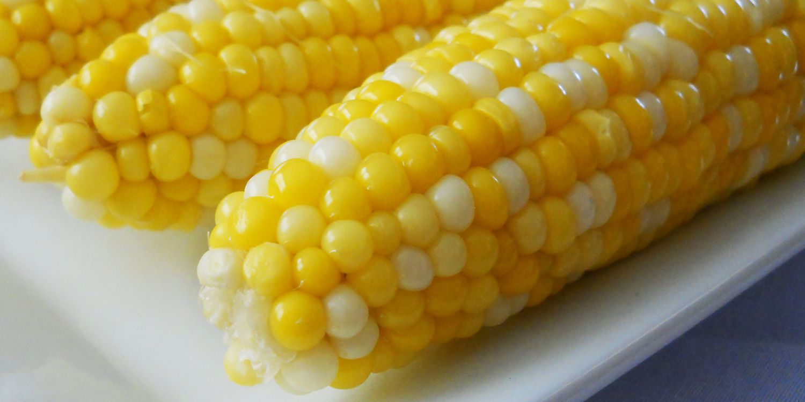

Sweet Corn on a Cob

Description
the tube shaped part of corn with its sweet
yellow or white kernels (= seeds) left on it,
served as a cooked vegetable.
Ingredients
- 2 tablespoons white sugar
- 1 tablespoon lemon juice
- 6 ears corn on the cob, husks and silk removed
Steps
- Fill a large pot about 3/4 full of water and bring to a boil.
- Stir in sugar and lemon juice until sugar is dissolved.
- Gently place ears of corn into boiling water.
- Cover the pot, turn off the heat.
- let corn cook in the hot water until tender, about 10 minutes.